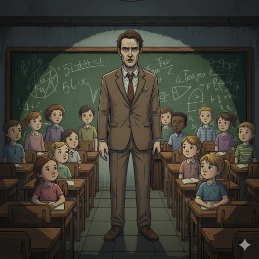
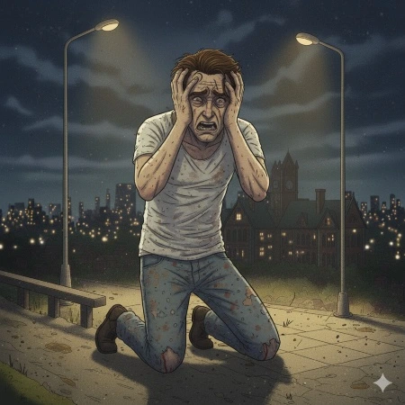

¡lets play poison!
trabajo práctico final web
introducción
bienvenidos al sitio web de la aventrua gráfica interactiva de temática "lets play poison web" en donde descubriremos de que se trata el proyecto, su fase de preprdución, su estructura general, quienes la creamos y la aventura interactiva. además tocando la opción "aventura grafica" del poison bar podrán acceder e interactuar en la aventra gráfica




para explorar el diagrama de flujo puedes acceder tocando este boton


origen de la AGIW
la aventura gráfica interactiva esta basada en un cuento llamado "lets play poison" cuyo autor fue ray bradbury
la aventura grafica interactiva fue desarrollada por dalia pastene y alesio fiaccola, somos alumnos de la comision 1 de programación para medios interactivos.
las imágenes de las diapositivas fueron generadas con la inteligencia artificial GEMINI, esas imágenes fueron almacenadas en la carpeta data del trabajo y fueron cargadas previamente en la función preload.

alesio fiaccola
soy estudiante de diseño multimedial de la facultad de artes. fanático de las artes visuales y de la pasta, me gusta dinujar, me gusta escuchar música y me gusta salir de paseo con mi familia

dalia pastene
ella es estudiante de diseño multimedial de la facultad de artes. ella es fanática de los videojuegos y la indumentaria, me gusta dinujar, le gustan los eventos de videojuegos de distintas sagas, le gustan los diseños de ropa y visita lugares históricos como teatros o museos con su familia y amistades